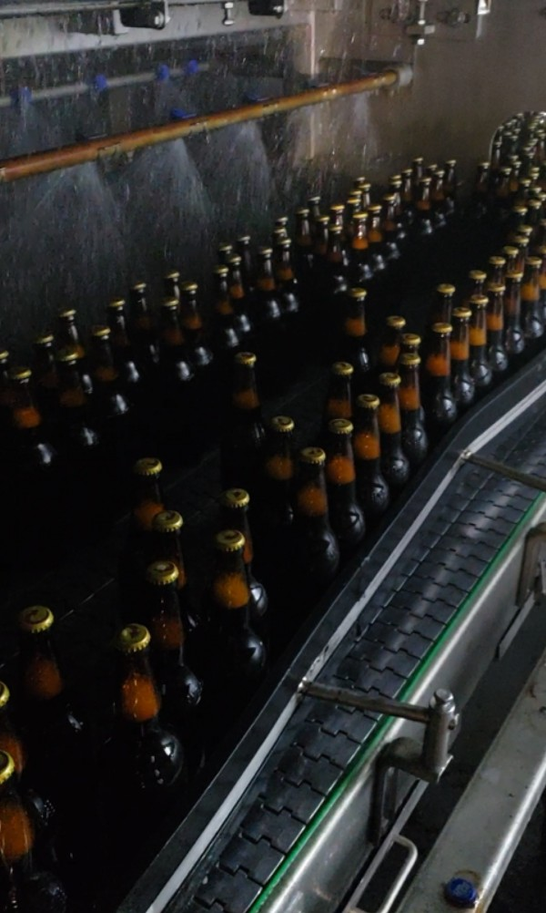

How a Tunnel Pasteurizer Works
In a tunnel pasteurizer, filled and capped bottles or cans travel slowly on a wide belt through a series of zones. Water is sprayed over the containers at controlled temperatures: first to warm them up, then to hold the beer at pasteurization temperature, and finally to cool them down before they leave the tunnel.

The belt speed sets how long each container stays in every zone. If the belt slips, surges or stops unevenly, the time at temperature changes and the pasteurization result is no longer what the brewery set. A belt that runs smoothly and at constant speed is part of product quality, not just maintenance.
Flat Wire and Eye-Link Belts
Pasteurizer belts are wide, long and permanently wet with warm, treated water. They must carry the full weight of filled containers, let the water drain freely and resist corrosion. Two stainless steel belt types are most common:
Light, with a very high open area for water flow and a flat, stable surface for containers. They are driven positively by sprockets that engage the belt openings.
Links joined by cross rods form a strong, heavy-duty belt for long, wide pasteurizers and heavy bottle loads. The rods and link eyes are the wear points to watch.
Why Shaft Alignment Matters
A pasteurizer belt is driven and guided by many sprockets spread across each shaft. Every shaft must be level, parallel to the others and square to the belt centerline. When a shaft is out of line, the sprockets no longer pull straight: some teeth push sideways on the wires or links instead of driving the belt forward.
Side loads from misaligned teeth bend flat wires and crack link eyes, starting at the sprocket lines.
The belt is pushed toward one side, rubs the frame and side guides, and wears its edges.
Uneven load concentrates on a few rods and links, which stretch and wear long before the rest of the belt.
A belt that is uneven or surging tips bottles, causes jams at infeed and outfeed and increases breakage.
BELTPRO aligns pasteurizer shafts with an optical transit (theodolite), using a single reference line for the whole machine. After alignment, the bearing positions are marked so any later movement can be seen and corrected immediately.
Sprocket Alignment and Positioning
Even with perfectly aligned shafts, the belt can be damaged if the sprockets themselves are wrong. Each sprocket must sit in the correct belt opening, line up with the matching sprocket on the next shaft and be in time with the others on its own shaft.
- A sprocket in the wrong opening rides on the wires or links instead of driving them, bending the mesh at every revolution.
- Drive and idler shafts can follow different opening patterns, so the layout must be checked shaft by shaft.
- Only the center sprockets are normally locked. The others must float sideways so the belt can expand with the warm water without being forced.
- Worn sprockets should be replaced as a set. Mixing new and worn teeth on the same shaft creates uneven pull across the width.
The correct sprocket positions depend on the belt type, its pitch and width, and the machine design. BELTPRO checks sprocket type and condition, aligns every sprocket line across the shafts and sets the correct openings during installation.
Belt Support and Wear Strips
Inside the tunnel, the loaded belt slides on wear strips. Worn, loose or stepped strips create height differences that bend the mesh, increase friction on the drive and make bottles unstable. Wear strips, return rollers and infeed and outfeed transfers should be inspected together with the belt and sprockets.
How BELTPRO Helps Breweries
- Shaft alignment with an optical transit, with bearing positions marked afterwards.
- Sprocket inspection, alignment and positioning in the correct belt openings.
- Installation, splicing and tensioning of flat wire and eye-link belts.
- Inspection of wear strips, return rollers and transfers.
- Troubleshooting of tracking, mesh damage and bottle falls.
- Training for maintenance teams and detailed technical reports.
Keep Your Pasteurizer Belts Running Straight
Whether you are installing a new belt, replacing sprockets or dealing with recurring mesh damage, BELTPRO can help your brewery protect its pasteurizer belts. Contact us to plan your next installation or inspection.
This article is intended for general technical guidance and preliminary engineering reference only. Belt selection, installation, alignment and adjustments must always follow the equipment and belt manufacturers' documentation, the actual operating conditions and the plant's safety procedures.